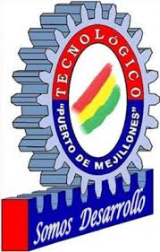
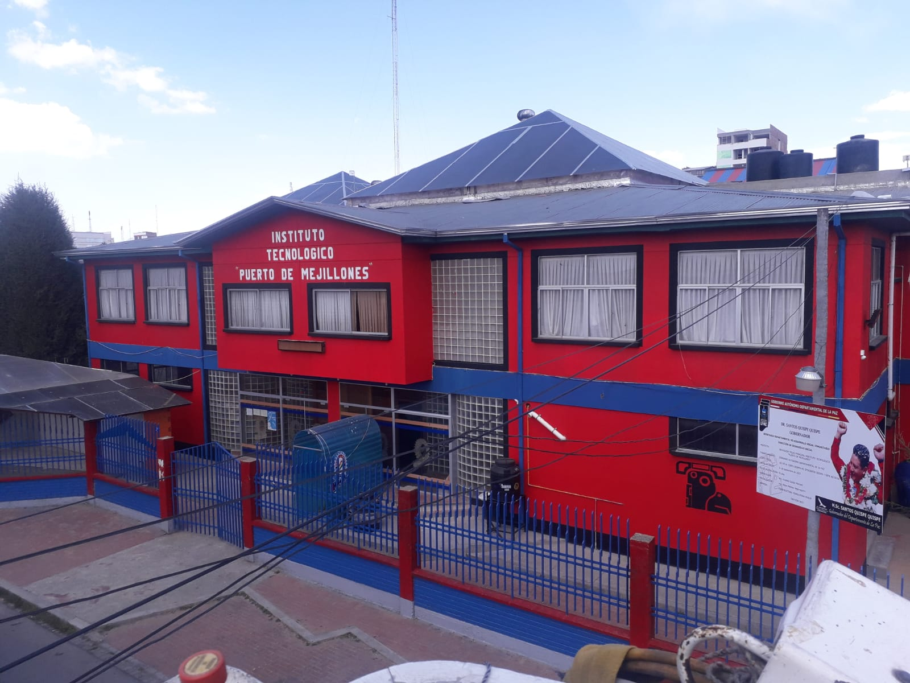
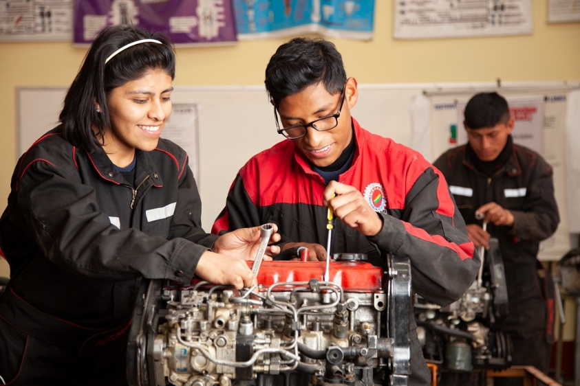
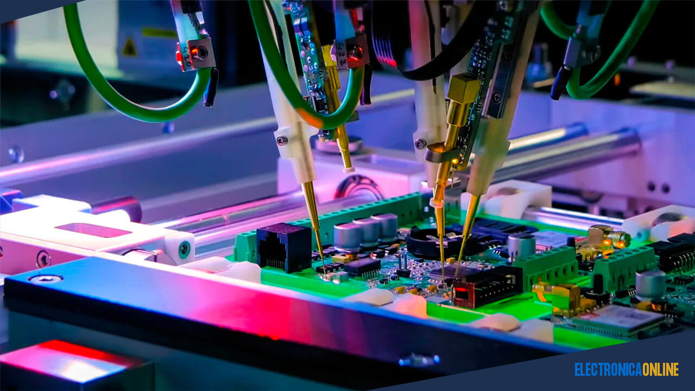

Técnico Superior
Sistemas Informáticos
Especialízate en desarrollo de software, gestión de infraestructura de redes, bases de datos y soporte tecnológico integral enfocado en la transformación digital actual.

Educación Superior Técnica en Ciudad Satélite, El Alto

Con cerca de 40 años de sólida trayectoria formativa en la ciudad de El Alto, Bolivia, el Instituto Tecnológico Superior "Puerto de Mejillones" se destaca por la excelencia en su educación práctica. Contamos con talleres e infraestructura diseñados para que nuestros estudiantes desarrollen competencias directas para insertarse con éxito en el sector industrial y tecnológico del país.
Especialízate en desarrollo de software, gestión de infraestructura de redes, bases de datos y soporte tecnológico integral enfocado en la transformación digital actual.

Domina el diagnóstico electrónico vehicular, mantenimiento preventivo y correctivo de motores a inyección, sistemas de transmisión y las nuevas tecnologías del parque automotor.

Aprende sobre automatización industrial, diseño de circuitos integrados, robótica, mantenimiento de equipos industriales y sistemas de control programables (PLC).